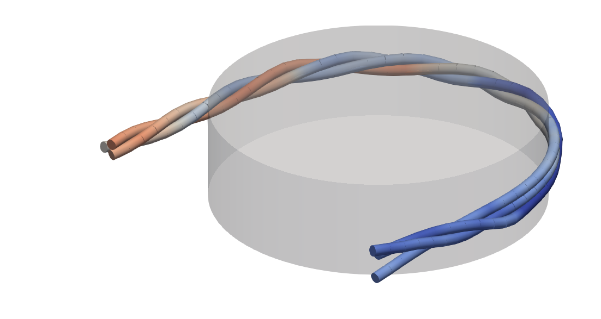
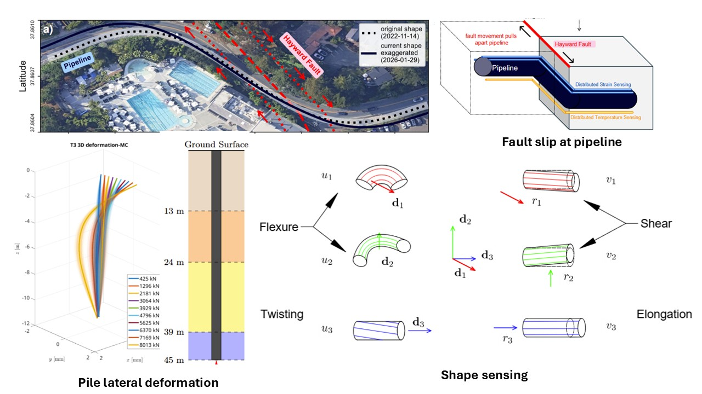
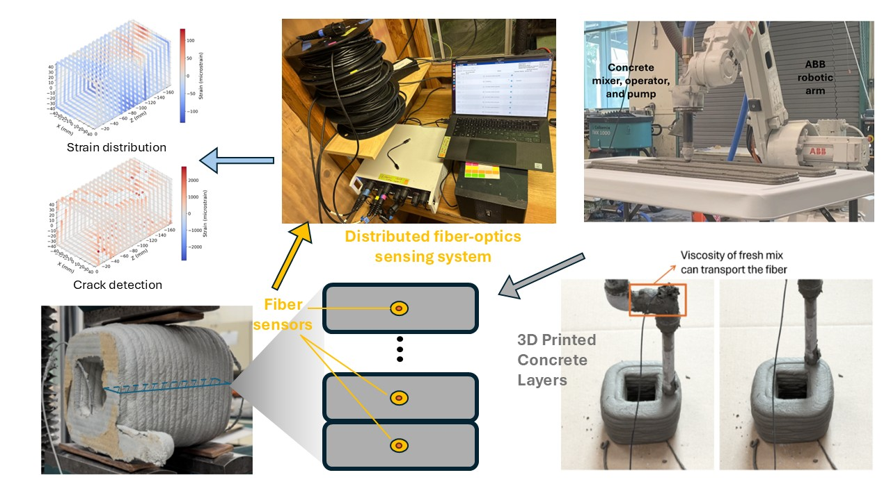
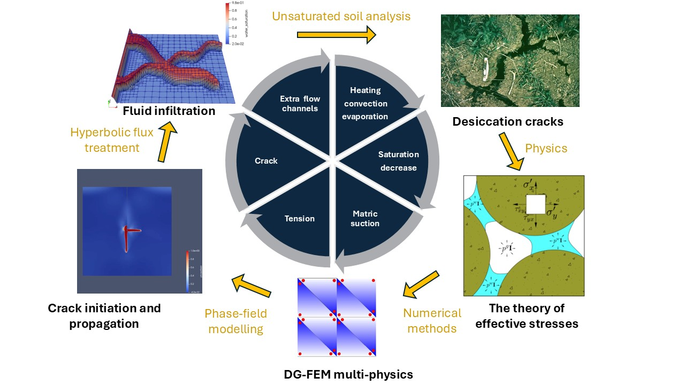
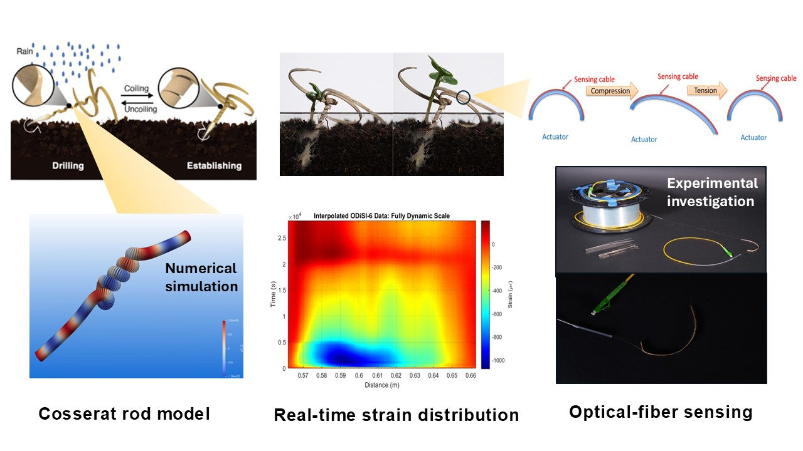

Yaobin Yang 杨耀斌
Postdoctoral Researcher · Department of Civil and Environmental Engineering, UC Berkeley

408 Davis Hall
UC Berkeley, CA 94720
+1 (510) 426-2198
I am a Postdoctoral Researcher in the Department of Civil and Environmental Engineering at the University of California, Berkeley, working with Prof. Kenichi Soga in the Soga Research Group. I received my Ph.D. (2024, with minors in Structural Engineering and Applied Mathematics) and M.Sc. (2020) in Civil Engineering from UC Berkeley, and my B.E. in Civil Engineering (2019, minor in Applied Mathematics) from Tongji University. I have also held appointments as a Research Affiliate at Lawrence Berkeley National Laboratory (LBNL) and as a Visiting Scientist at Rothamsted Research (UK).
My research unites high-performance computational geomechanics, distributed fiber-optic and acoustic sensing (DFOS/DAS), and physics-constrained inverse modeling (PDECO) to advance the resilience and automation of civil, water, and energy infrastructure. On the computational side, I develop matrix-free Discontinuous Galerkin finite element methods (DG-FEM), coupled thermo-hydro-mechanical (THM) phase-field fracture models, parallel 3D Material Point Methods (deal.II-MPM), dynamic Cosserat rod solvers, and ultraweak Discontinuous Petrov-Galerkin (DPG) poroelastic wave solvers. On the experimental and field side, I deploy distributed fiber-optic sensors across fault-crossing water pipelines, deep foundations, geothermal boreholes, and 3D-printed concrete, and design custom miniature fiber-optic pore-pressure probes and 3D shape/tactile sensors.
news
| 2026 | Our paper on Inference of pile capacity from distributed strain sensing via PDE-constrained optimization is published in Computers and Geotechnics (Vol. 196, 108131). |
|---|---|
| 2026 | Our paper on Distributed Fiber Optic Sensing for Monitoring Piles under Eccentric Load is published in ASCE Journal of Geotechnical and Geoenvironmental Engineering (JGGE). |
| 2026 | Delivered an invited keynote lecture at the International Joint Research Center for Resilient Infrastructure (ICRI) Youth Lecturer Series and at the NSF GCR Rooted in Nature workshop. |
| Sep 2025 | Our paper on Cosserat rod-based modeling and stochastic analysis for distributed fiber optics shape-sensing is published in Mechanical Systems and Signal Processing (Vol. 241, 113457), with open-source MATLAB code and live video demo. |
| Sep 2025 | Filed U.S. Provisional Patent Application No. 63/877,853 on Flying Driller: Gravity- and Inertia-Driven Penetration with Seed-inspired Flight Behavior for Enhanced Aerial Seeding. |
| Jan 2025 | Started appointment as Postdoctoral Researcher in the Department of Civil and Environmental Engineering at UC Berkeley. |
| Dec 2024 | Completed Ph.D. in Civil Engineering at UC Berkeley (Dissertation: Discontinuous Galerkin Finite Element Analysis and Experimental Sensors Innovations for Unsaturated Soil). |
publications * denotes corresponding or co-first author
2027
-
ASCE 2027Fiber-optic Miniature Pore Pressure Probe: Design, Fabrication and ApplicationIn ASCE Conference 2027 (Accepted Abstract, ID: ASCE2027-288), 2027Design, micro-fabrication, calibration, and laboratory soil testing validation of a custom miniature fiber-optic pore-water pressure probe capable of resolving localized transient pore pressure changes in unsaturated and saturated geomaterials.
2026
-
CompGeoInference of pile capacity from distributed strain sensing via PDE-constrained optimizationComputers and Geotechnics, Vol. 196, 108131, 2026Develops a partial-differential-equation-constrained optimization (PDECO) inverse modeling framework that assimilates high-resolution distributed fiber-optic strain profiles to infer mobilization of shaft friction, base resistance, and nonlinear soil-pile load-transfer parameters without empirical differentiation amplification errors.
-
ASCE JGGEDistributed Fiber Optic Sensing for Monitoring Piles under Eccentric LoadJournal of Geotechnical and Geoenvironmental Engineering (ASCE), 2026Full-scale field instrumentation and mechanical interpretation of deep foundation piles subjected to combined axial and eccentric loading using continuous distributed fiber-optic strain and temperature sensing.
-
CMAME Under ReviewA Matrix-Free Discontinuous Galerkin Method for Dynamic Cosserat Rod SimulationUnder Review at Computer Methods in Applied Mechanics and Engineering (CMAME), 2026Formulates a high-order, matrix-free Discontinuous Galerkin finite element method in C++ (deal.II) for geometrically exact dynamic Cosserat rods, resolving large 3D rotations, bending-torsion coupling, frictional self-contact, and dynamic instabilities with linear memory scaling.
-
GRL Under ReviewTransforming Critical Water Pipelines into Seismic Fault Movement SensorsUnder Review at Geophysical Research Letters (GRL), 2026Demonstrates how an operating buried water transmission pipeline crossing the active Hayward Fault serves as a continuous tectonic creep sensor, combining distributed strain/temperature sensing with Cosserat rod kinematic reconstruction to resolve fault slip to ~4 mm/year accuracy.
-
ASCE JGGE Under ReviewA Semi-Analytical Framework for Thermal Integrity Profiling of Cast-in-situ Piles Using Temperature Response FunctionsUnder Review at Journal of Geotechnical and Geoenvironmental Engineering (ASCE), 2026
-
Addit. Manuf. Under ReviewEmbedded Fiber-optic Sensing in Printed Concrete for Structural Failure and Fracture MonitoringUnder Review at Additive Manufacturing, 2026
-
Nat. Ecol. Evol. Under ReviewHygrochastic Seedpods: Engineering Microclimates for Ecological RestorationUnder Review at Nature Ecology & Evolution, 2026
-
JOES Under ReviewFlow-Induced Vibration Suppression for Distributed Fiber Optic Sensing Cables in Turbulent Marine EnvironmentsUnder Review at Journal of Ocean Engineering and Science, 2026
-
TR Part C Under ReviewOptimal Control Modeling for Switched Systems in Traffic EvacuationUnder Review at Transportation Research Part C: Emerging Technologies, 2026
2025
-
MSSPCosserat rod-based modeling and stochastic analysis for distributed fiber optics shape-sensingMechanical Systems and Signal Processing, Vol. 241, 113457, 2025Establishes a 3D shape-sensing framework combining helical/multi-core distributed fiber-optic strain measurements with Cosserat rod kinematics and Lie-group stochastic error propagation, providing analytical uncertainty bounds validated against real-time experimental reconstructions.
-
U.S. PatentFlying Driller: Gravity- and Inertia-Driven Penetration with Seed-inspired Flight Behavior for Enhanced Aerial SeedingUnited States Patent and Trademark Office (USPTO), 2025
2024
-
Ph.D. ThesisDiscontinuous Galerkin Finite Element Analysis and Experimental Sensors Innovations for Unsaturated SoilPh.D. Dissertation, University of California, Berkeley, December 2024
-
ASCE PipelinesDesign and Installation of Distributed Fiber Optic Sensing Technology to Monitor HDPE Pipelines at an Earthquake Fault CrossingIn ASCE Pipelines 2024, pp. 561–571, 2024
-
Geo-CongressThermal Response Test of Geothermal Boreholes Using Distributed Fiber Optic SensingIn ASCE Geo-Congress 2024, pp. 493–503, 2024
2023
-
EnergyNumerical analysis of coupled thermal-hydro-chemo-mechanical (THCM) behavior to joint production of marine gas hydrate and shallow gasEnergy, Vol. 281, 128224, 2023
2022
-
AGUIntermediate-scale testing of a spatially distributed sensing technology for monitoring greenhouse gas migration through vadose zone to the atmosphereAGU Fall Meeting Abstracts, Vol. 2022, H45J-1511, 2022
simulations & videos Click 'Expand' on any video or figure for theater view
Three-Wing Rotary Drag-Bit Drilling in Sensitive Clay (Parallel 3D deal.II-MPM)
Parallel explicit 3D Material Point Method on p4est-distributed octree grids (h = 0.625 mm, 1.31M material points, sensitivity S_t = 10) combining uGIMP/Q1, APIC/FLIP, true USF, and inf-sup stable Bercovier-Pironneau (Q1-iso-Q2/Q1) volumetric projection onto the 2h parent grid to capture helical ribbon cuttings, Einav-Randolph softening, and smeared tension cracking.
Real-Time Fiber-Optic 3D Shape Sensing via Cosserat Rod Kinematics
Live experimental demonstration reconstructing 3D spatial curves in real time from distributed fiber-optic strain measurements using Cosserat rod differential geometry and stochastic Lie-group error bounds (MSSP, 2025).
Ultra-Fine 2.08M-Particle Rotary Drilling & Cuttings Fragmentation
Finest-resolution deal.II-MPM simulation (h = 0.3125 mm, 2.08M particles) resolving thin shear bands ahead of each blade and tensile clod fragmentation at the free surface.
Rotating vs. Static Cone Penetration (CPT) in Structured Cam-Clay
3D CPT simulation with structured Modified Cam-Clay (MCC), exponential destructuring, and pore-fluid cavitation cutoff, comparing shear localization and tip resistance reduction under cone rotation.
Synchronized Drilling Thrust, Torque & Interior Cutaway
Quantitative tracking of weight-on-bit thrust and rotary torque oscillations paired with interior cross-sectional views of chip formation and tensile separation.
Soil Desiccation Crack Network with Dynamic AMR (DG-FEM)
Coupled Thermo-Hydro-Mechanical (THM) and AT2 variational phase-field fracture simulation with matrix-free geometric multigrid (MF-GMG), capturing suction-driven crack nucleation, 90-degree T-junctions, and dynamic AMR.
Flaw-Guided Desiccation Coalescence & Parallel Crack Lanes
Demonstrates crack curving, stress-shadowing, and coalescence between inclined flaws in unsaturated soil, where fine h = 0.39 mm elements track propagating fracture tips automatically.
Fluid-Driven Hydraulic Fracture Propagation (Sneddon Benchmark)
Simulates pressurized fluid injection and hydraulic fracture propagation in porous media with cubic aperture permeability enhancement and adaptive mesh refinement.
Thermal-Shock Crack Hierarchy & Mode-II Shear Fracture
Captures selective crack arrest and period-doubling in thermal-shocked solids alongside tension-compression split validation on the Miehe single-edge notched shear (SENT Mode-II) benchmark.

Matrix-Free DG Dynamic Cosserat Rods: Braiding & Contact
Matrix-free Discontinuous Galerkin solver in deal.II for dynamic Cosserat rods, resolving large 3D rotations, frictional self-contact, capstan mechanics, and bioinspired self-burrowing seedpods.

Ultraweak DPG Poroelastic Wave Scattering & 3D Landslide Runout
Unconditionally stable 2D/3D ultraweak Discontinuous Petrov-Galerkin (DPG) Helmholtz solver for Biot-Darcy-squirt poroelastic waves (P1, P2, P3 modes) alongside 3D DG landslide runout over real DEM topography.
research thrusts & sponsored projects

1. Sustainable Monitoring & Inverse Modeling of Infrastructure
Full-scale DFOS instrumentation of an operating water pipeline crossing the Hayward Fault (~4 mm/yr precision), eccentric-load pile tests, thermal integrity profiling, and PDE-constrained optimization (PDECO) for capacity inference.

2. Smart Construction via 3D Concrete Printing
Robotic co-extrusion of optical fibers directly into 3D-printed concrete layers, creating an embedded nervous system that tracks internal strain fields and provides early warning of brittle interlayer fracture.

3. High-Performance Computational Geomechanics
Matrix-free adaptive DG-FEM and coupled THM variational phase-field fracture for unsaturated soils, embankment dam cracking/seismic safety (USACE & FEMA), parallel 3D MPM penetration, and marine gas hydrate THCM.

4. Distributed Shape Sensing & Bioinspired Geotechnics
Cosserat rod 3D shape reconstruction with analytical error bounds, single-fiber woven tactile skin, miniature fiber-optic pore-pressure probes, and matrix-free DG modeling of self-burrowing seedpods and marine cables.
Sponsored Research Projects (NSF, USACE/FEMA, DOE, CEC)
-
2024 – PresentNSF GCR: Rooted in Nature, Bioinspired Design of Sustainable Seeding Methods to Improve Forest RegenerationNational Science Foundation (Award #2428641) · University of Pennsylvania, UC Berkeley, Syracuse UniversityRole: Multiphase poromechanics and dynamic Cosserat rod modeling of bioinspired self-burrowing actuators; development of woven single-fiber tactile skin prototype.
-
2025 – PresentUSACE & FEMA: Embankment Dam Safety, Cracking and Seismic LimitationsU.S. Army Corps of Engineers Dam Safety Production Center (DSPC-T) · FEMA · UC BerkeleyRole: Coupled THM and phase-field modeling of crack initiation and propagation in embankment soils; technical review on levee safety and seismic risk.
-
2026 – PresentU.S. DOE GTO: GeoSecure-RTS, Geothermal Security with Real-Time SimulationU.S. Department of Energy (DOE), Office of Geothermal Technologies (GTO)Role: High-fidelity geothermal reservoir simulation, AI surrogate modeling, and adaptive meshing to identify potential cyber-physical anomalies in geothermal power plants.
-
2023 – PresentCEC: Integrated Monitoring of Cetacean and Ocean Environmental Impacts from Floating Offshore Wind DevelopmentCalifornia Energy Commission (Award #CEC-EPC-23-002) · LBNL, UC Berkeley, MBARI, OptasenseRole: Nonlinear dynamic simulation of offshore mooring lines and underwater DAS sensing cables; acoustic wave propagation solvers.
-
2019 – 2024NSF-UKRI Signals in the Soil: Dynamic Coupling of Soil Structure and Gas Fluxes Measured with Distributed Sensor SystemsNSF & UKRI (Award #1935551) · UC Berkeley, Colorado School of Mines, Rothamsted Research (UK)Role: Distributed fiber-optic sensor development, soil mesocosm experimentation, and spectrum-based BOTDA crack localization.
curriculum vitae English CV (PDF) · 中文简历 (PDF)
Education
-
09/2020 – 12/2024Ph.D. in Civil EngineeringUniversity of California, Berkeley, USADissertation: Discontinuous Galerkin Finite Element Analysis and Experimental Sensors Innovations for Unsaturated Soil · Minors: Structural Engineering, Applied Mathematics · Advisor: Prof. Kenichi Soga
-
09/2019 – 09/2020M.Sc. in Civil EngineeringUniversity of California, Berkeley, USA
-
07/2015 – 09/2019B.E. in Civil EngineeringTongji University, Shanghai, ChinaMinor: Applied Mathematics · Tongji University First-Class Academic Excellence Scholarship (2016–2017)
Academic & Research Appointments
-
01/2025 – PresentPostdoctoral Researcher (Postdoctoral Scholar)Department of Civil and Environmental Engineering, University of California, Berkeley
-
09/2022 – 12/2025Research AffiliateEnergy Geosciences Division, Lawrence Berkeley National Laboratory (LBNL)
-
10/2023 – 01/2024Visiting ScientistRothamsted Research, Harpenden, United Kingdom
-
09/2020 – 12/2024Graduate Student Researcher (GSR)Department of Civil and Environmental Engineering, University of California, Berkeley
teaching, mentorship & service
Teaching & Graduate Mentorship at UC Berkeley
-
Fall 2021, 24, 25Course Project Leader · Infrastructure Sensing and ModelingDepartment of Civil and Environmental Engineering, UC BerkeleyLed semester-long student project teams integrating distributed fiber-optic sensors, laboratory testing, and numerical modeling; designed a hands-on sensing experiment that generated data published in a peer-reviewed journal.
-
Fall 2019Graduate Student Instructor (GSI) · Applied GeophysicsDepartment of Civil and Environmental Engineering, UC BerkeleyServed as the only Graduate Student Instructor (GSI/TA) for the course at UC Berkeley, receiving a teaching evaluation score of 4.64 / 5.00 (departmental average: 4.23).
-
2021 – PresentGraduate & Doctoral Student MentorshipSoga Research Group, UC BerkeleyCo-advised and mentored five graduate and doctoral researchers in experimental design, computational mechanics code development, and manuscript preparation: Maksymilian Jasiak, Shih-Hung Chiu, Yan Wu, Jiahui Yang, and Fanbao Cheng.
Invited Keynotes, Honors & Peer Review Service
-
Peer ReviewerJournal Peer ReviewerComputer Methods in Applied Mechanics and Engineering (CMAME), Elsevier · Journal of Geotechnical and Geoenvironmental Engineering (JGGE), ASCE · Canadian Geotechnical Journal (CGJ), Canadian Science Publishing · Applied Mathematical Modelling, Elsevier
-
KeynotesInvited Keynote Presentations• ICRI Youth Lecturer Series (2026, Shanghai): “Advancing Distributed Fiber-optics Sensing through Physically Grounded Mathematical Frameworks” (Link)
• NSF GCR Rooted in Nature Project Event (2026, Berkeley, CA): “Mechanisms for Falling Seeds and Numerical Simulations”
• UC Berkeley Geotechnical Engineering Research Symposium (2024, Berkeley, CA): “Fiber-Optic Shape Sensing and Error Analysis with the Cosserat Theory of Rods” -
HonorsSelected Honors & Awards• Meritorious Winner (M Prize), Interdisciplinary Contest in Modeling (MCM/ICM, 2018)
• First-Class Academic Excellence Scholarship (2 Consecutive Years), Tongji University (2016–2017)
• National First Prize, Chinese Mathematics Competitions (CMC, Non-Mathematics Major, 2016)